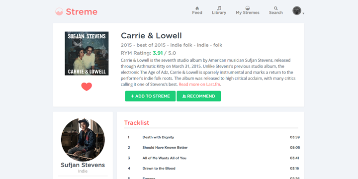

Streme - PHP
Easily connect with topics you care about.
Streme is an open platform for people with common interests to share content, ideas, and much more.
Mission
The goal was to create a simple platform for people to connect with things and topics they care about.
Topic are categorized in what are called "Stremes". Lets say there's a cat streme so people can post and view content all about cats in that streme.
Technologies
Streme.in was created with PHP (Slim Framework). Data is managed with mySQL.
Respiratories used:
- Violin - An easy to use, highly customisable PHP validator.
- Twig - Twig, the flexible, fast, and secure template language for PHP
- PHPMailer - The classic email sending library for PHP
- Illuminate Database
- RandomLib - A library for generating random numbers and strings
- PHP Markdown - Parser for Markdown
- Carbon - A simple PHP API extension for DateTime
Created
Founded in September 2015 · Yet to launch
Currently still in development